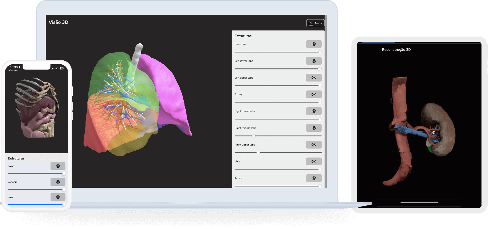

Biodesignlab 3D viewer
Solicitar
Visualizador 3D cirúrgico
Soluções para planejamento de cirurgias complexas no seu computador ou dispositivo móvel, com possibilidade de navegar em modelos 3D virtuais.
